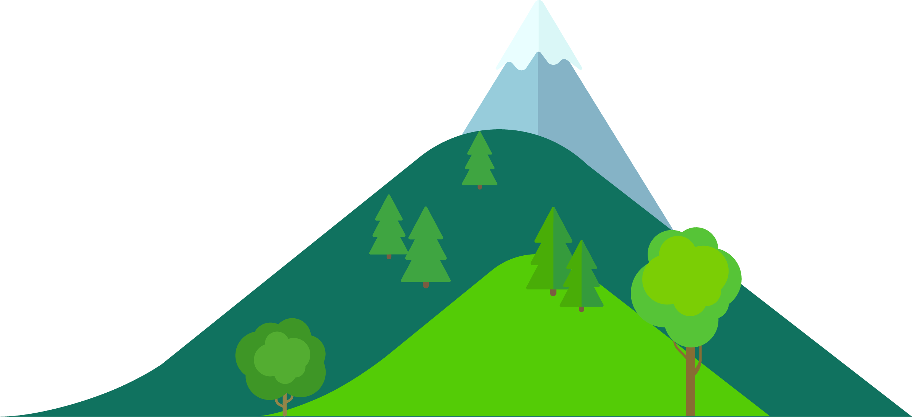
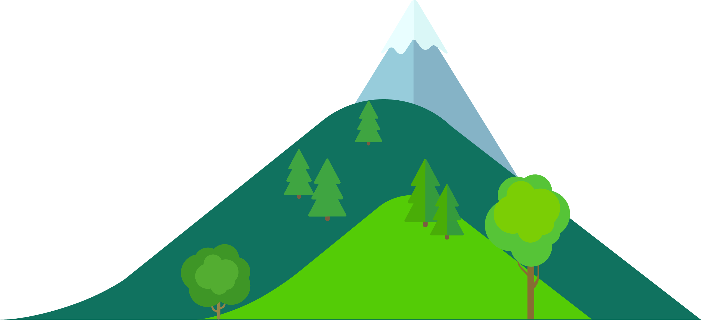

I'm Ricardo
a Tech guy.



I'm a Tech Institute Teacher in Jerez, Zacatecas. I teach Computer Networking and a little bit of sustainable development and 3D design fundamentals. I ❤️ gaming, coffee and beer.
I've had always the curiosity of knowing how the computers connect one and other, and this has always been my initial motive to study and teach Computer Networking.
Since I was a kid, I've been attracted to different kinds of technology, and all my life I've had the thrive to know how things work, and even the necesity to explain people the fundamental principles of tech gadgets.
We could talk about games and gadgets while we drink a really good artesan made beer.
CONTACT ME